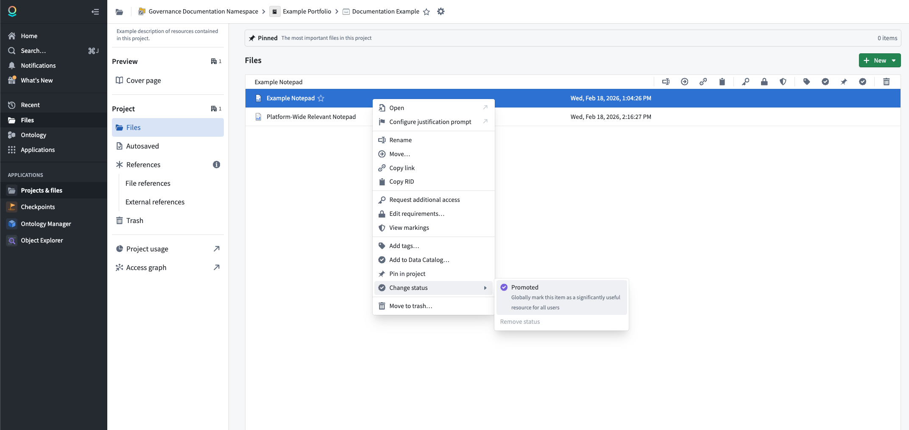
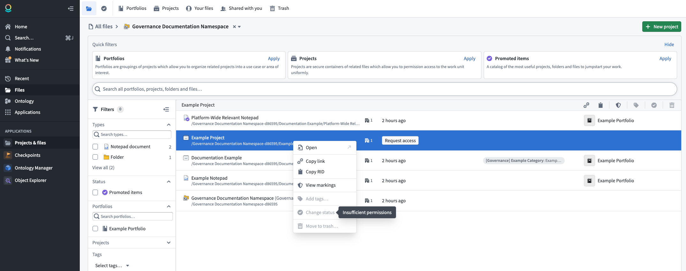

Resource status allows you to indicate the importance of resources in the platform. Setting a status on a resource affects its visibility in search results, changes how it appears to other users, and influences how the platform treats the resource. Currently, the only available status is Promoted.
You can mark a resource as Promoted to signal that it is recommended for all users. Promoted resources receive the following benefits:
Take the following steps to promote a resource:

:::callout{theme="warning"} To promote a resource, you must have the Editor role or higher on that resource, and you must be granted the Resource Curator role at the space level. :::

To remove the promoted status from a resource:
The resource will return to its default state with no status applied.